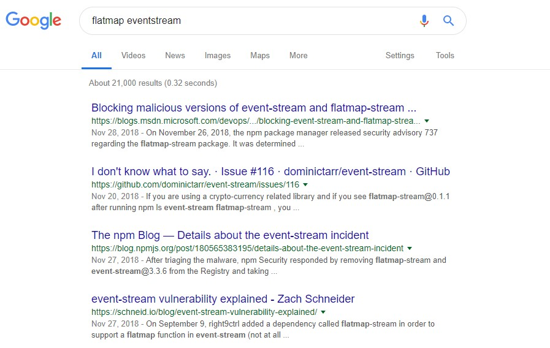
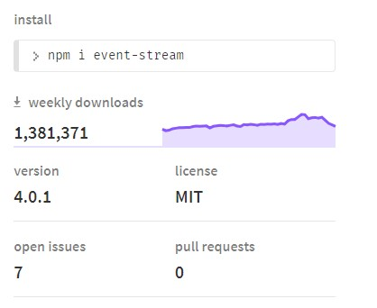

Dec 18, 2018
Why Clean Vue ?
The year of 2018 has been pretty crazy for Node packages. Past few days have witnessed the explosion of news about a malicious package in Node package repositories. So, I'd like to explain what exactly happened and what this project is going to do to remediate this.
What Happened exactly?
As of today's search results, if I search for
flatmap eventstream, Google is still filled up with
results related to the Flatmap incident.
 So, let me
explain what exactly happened..
There is a popular package named eventstream in the
node package repository. It is soo popular that it gets downloaded
more than a million times a week.

Everything was going smooth until something bad happened. Like they say, there's always good and bad to everything. Same happened with event-stream. The author transferred the ownership of the project to some unknown Github user who contacted him on mail. This unknown user has injected a new dependency flatmap for his own purpose.
As described from Npmjs blog,
On the morning of November 26th, npm’s security team was notified
of a malicious package that had made its way into event-stream,
a popular npm package. After triaging the malware, npm Security
responded by removing flatmap-stream and event-stream@3.3.6 from
the Registry and taking ownership of the event-stream package
to prevent further abuse.
The malicious package was version 0.1.1 of flatmap-stream.
This package was added as a direct dependency of the event-stream
package by a new maintainer on September 9, 2018, in version
3.3.6. The event-stream package is widely used, but the
malicious code targeted developers at a company that had
a very specific development environment setup: running the payload
in any other environment has no effect. This specific targeting
means that, ultimately, most developers would not be affected
even if they had mistakenly installed the malicious module.
The injected code targets the Copay application. When a developer
at Copay runs one of their release build scripts, the resulting
code is modified before being bundled into the application.
The code was designed to harvest account details and private keys
from accounts having a balance of more than
100 Bitcoin or 1000 Bitcoin Cash.
Were these kind of threats unpredictable ?
People might be thinking that these kind of threats are unfortunate and can not be predicted. Trust me people, You are wrong !! There were already warnings by a few wize citizens of the internet. One of these is a fictious but vittious blog by David Gilbertson. In this article, David explains how he could have injected a malicious package into npm (Yes! Exactly the thing that happened now !) There were other articles too. Like the one article by Keith Collins. This is a similar article explaining how broken the open-source software development was.
So what's all with this now?
The main problem that can be seen from these articles and the incident that happened can be described as "the blind trust on the dependancies from npm". While its true that it is impossible to check the validity of each dependancy from the never-ending node_modules list, there is a workaround to overcome this problem. The solution can be devided into three major categories as follows:
- Continuous verification of each dependancy of popular packages like vue
- Removal of unnecessary dependancies through pull requests to package maintainers
- Substitution of the dependancy's work by writing short hand-written snippets in the package itself